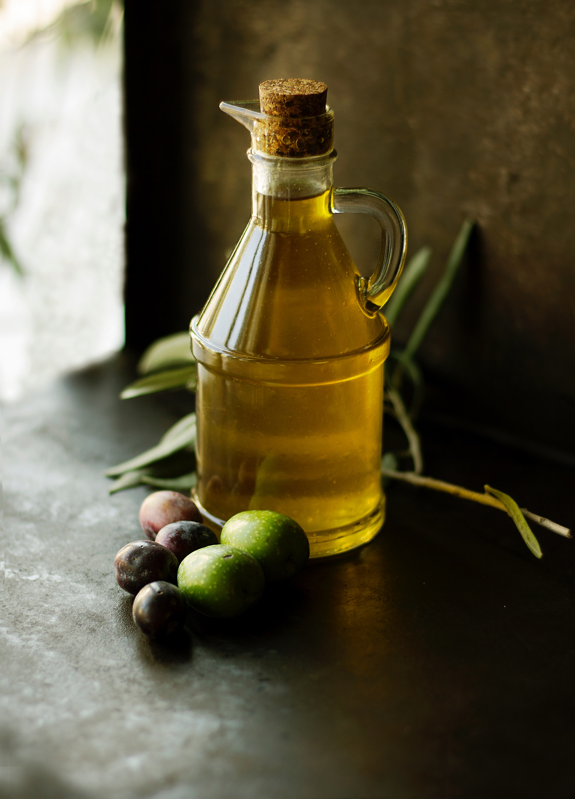
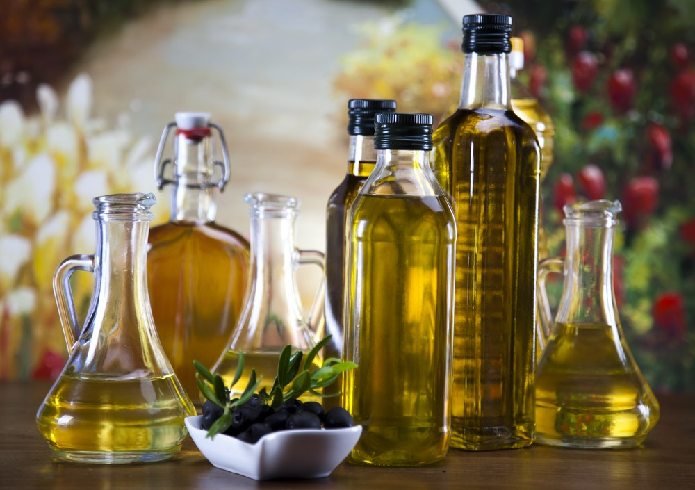
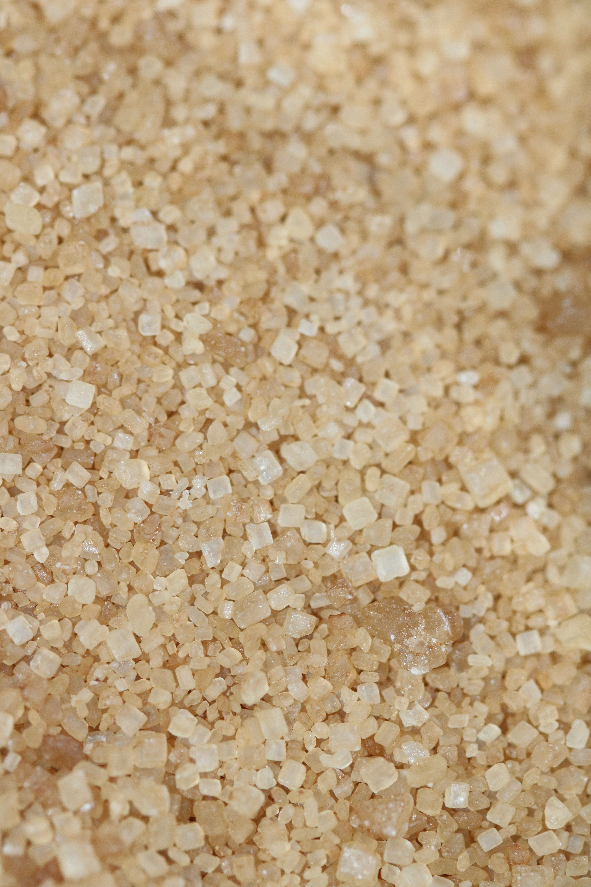

we deal in a wide range of healthy vegetable and olive cooking oil suitable for everyone. sikapong oil can be used for cooking all kinds of dish that needs an input of oil. Order yours now and have it delivered at your doorstep. Sikapong Oil! The Oil You Can Live With

Vegetable oils contain essential fatty acids (EFA) which are vital for our health but cannot be synthesised by our body.
The three EFAs are:
Omega 3, essential for the proper functioning of the brain. Omega 6, vital for regenerating and repairing the cells of our bodies and keeping them healthy. Omega 9, which helps to lower the risk of cardio vascular diseases.
Over the last 50 years, many studies have looked at the health benefits of olive oil.
Olive oil and the cardiovascular system Olive oil is the main source of dietary fat in the Mediterranean diet. There appears to be a lower death rate from cardiovascular diseases in the Mediterranean area, compared with other parts of the world.
Olive oil may help prevent stroke Scientists in France concluded that olive oil may prevent stroke in older people. The team found that older people who regularly used olive oil for cooking and salad dressing or with bread had a 41-percent lower risk of stroke, compared with those who never consumed it.

Because of the molasses content in brown sugar, it does contain certain minerals, most notably calcium, potassium, iron and magnesium (white sugar contains none of these). Sikapong brown sugar is essential booster for your body and should not be taken in excess as every sugar requires. It has all the necessary nutrients in their right amounts.